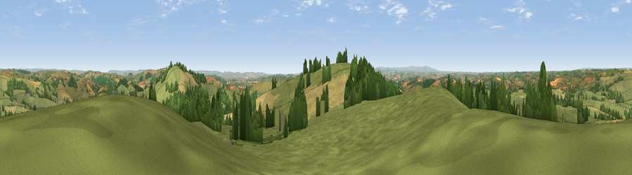

Viewpoint near Stockleigh Pomeroy
#5623 in England · top 5% of its area beats it · near Stockleigh PomeroyThe view, rendered

A 360° render of this exact spot computed from the terrain model, tree cover and land cover — summer colours, afternoon light, calibrated against photographs of famous viewpoints. Real trees, hedges and buildings will differ in detail.
The panorama
Grey silhouette: terrain skyline in each direction (720 bearings, Earth curvature and refraction included). Dashed green: skyline with trees (+15 m) and buildings (+8 m) as obstacles. Blue strip: how far the ground is visible on each bearing.
Where the view opens
Wedge length = distance to the farthest visible ground on that bearing (vegetation-aware). Rings at 10, 25 and 50 km.
What fills the view
69% grassland · 16% woodland · 14% cropland
Angular shares of the visible panorama (visual magnitude), not map area. Landscape diversity 0.37 (0–1 Shannon).
Key numbers
More beautiful places nearby
The staircase of upgrades: each row has a higher view potential than everything closer. Driving times are estimates from straight-line distance, calibrated against real road routing — check an actual route before setting out.
| Place | Direction | Drive | Score |
|---|---|---|---|
| Cadbury Castle | E · 1 km | ~4 min | 73.7 |
| Raddon Hills | S · 2 km | ~6 min | 78.2 |
| Viewpoint near Stockleigh Pomeroy | S · 2 km | ~6 min | 78.9 |
| Viewpoint near Whitestone | SSW · 11 km | ~21 min | 79.8 |
| Viewpoint near Kenn | S · 22 km | ~36 min | 80.0 |
| Viewpoint near Kenton | S · 24 km | ~40 min | 80.7 |
| Viewpoint near Kenton | S · 25 km | ~40 min | 82.9 |
| High Peak | SE · 28 km | ~45 min | 85.3 |
50.83874, -3.56571 · source: screening · position refined by local search. Computed location — check access rights before visiting.